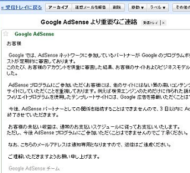
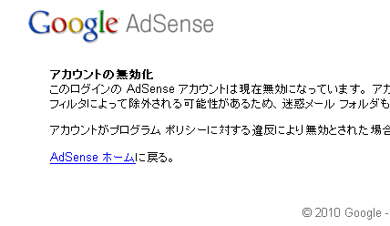

グーグルアドセンスのアカウント無効について
グーグルアドセンスはクリック単価が高いことで人気ですが、その反面、アカウントが無効になるケースがけっこう多いです。
当ブログでもアドセンスのアカウントはすでに無効となっていますが、アカウントの削除はけっこうな頻度で発生していますので、アフィリエイトASPは分散して登録することをおすすめします。
アドセンス無効の際は成果報酬型の広告がおすすめ
アドセンス収益をメインにサイトを運営していた場合、アカウントが無効になれば、収益が大幅に減少してしまうことになります。
けれども、アドセンスの利用とグーグル検索結果でのランキングは無関係ですので、アカウントが無効化したからといって、アクセス数に影響することはほとんどありません。
個人的な印象では、アドセンス広告のジャバスクリプトを取り除き、ブログの表示が軽くなることで、かえってランキングが上昇する印象も見受けられます。
ですので、アドセンスのかわりに、成果報酬型のアフィリエイト広告を取り入れることで、収益はある程度まで改善していくものと思います。
クリック報酬タイプのアフィリエイト広告には、グーグルアドセンス以外にも いくつかありますが、広告の多様さやコンテンツマッチの精度がいまいちなせいか、それほどクリック率はよくない印象があります。
- 楽天ぴたっとアド
- マイクロアド
- yahooアドパートナー
ですので、アドセンス無効の際は他のクリックタイプを掲載するよりも、成果報酬タイプの広告を掲載することをおすすめします。
成果広告の場合は報酬額の高いケースが多いので、成約率が高くなるようなブログの作り方をこころがけましょう。
■作り変えのイメージ
【クリック報酬】
アクセス数：1000 表示回数：1000 クリック率：1% 単価：10円
→報酬：100円
【成果報酬】
アクセス数：1000 表示回数：50 クリック率：20% 単価：1000円 成約率：20%
→報酬：2000円
成約率が高くなるよう、時間をかけて非常に丁寧に作りこんだ１ページのみに広告を貼り付け、サイトに流れてくるアクセスを、そのページへ誘導するようなブログの作り方が効率的です。
ちなみに、グーグルアドセンスのアカウントが無効になるケースを調べてみますと、毎月ある程度まとまった収益が発生するようになると、チェックの方も厳しくなり、アカウントが無効になってしまう傾向にあるようです。
例年、アカウントの無効は１１月あたりに集中している傾向がありますので、その時期は気をつけた方がよいでしょう。
ちなみに、アドワーズアカウントの削除もそのあたりのようです。
突然やってくるアカウント無効の通知メール
このアドセンスアカウントの無効は、ある日突然、一通のメールがやってきてそれで終了となります。

返信もできなければ、理由なども一切知らされず、この１通のみで終了してしまいましたが、収益の方はきちんと支払われました。
この時、メールでは3日後に表示されなくなると書いていたんで、私はすぐに広告をはずしてしまったのですが、結局、2週間程度は有効だったようですので、表示されなくなるまで掲載していた方がいいと思います。
正式に無効となった時、ログインしようと思ってもこのような画面が表示されますので、それ以降はログインすることができなくなります。

必要なデータはメールが来た時点で全てダウンロードしておく必要があります。
アドセンスはアフィリエイトしやすいですが、いつ無効になるかまったくわからないですので、アフィリエイト収益は分散させておくのがよいでしょう。
- 無料ブログでグーグルアドセンス
グーグルのグーグルアドセンスは、あなたのブログやサイトに広告を自動で表示してくれるグーグルの無料サービスのことです。 グーグルアドセンスは毎回同じ広告ということではなく、時間の経過やクリック率、クリッ...